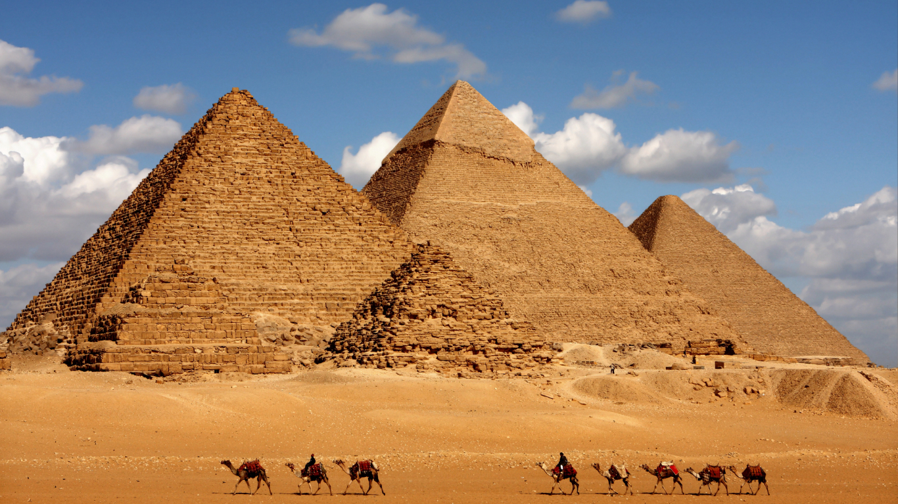

Sejarah
Piramida adalah bangunan kuno dengan struktur batu. Pada bulan November 2008, diperkirakan bahwa terdapat 138 atau 118 jumlah piramida yang telah teridentifikasi. Sebagian besar piramida tersebut dibangun selamaa periode Kerajaan Pertengahan Mesir dan Kerajaan Lama Mesir, sebagai makam untuk raja-raja Mesir Kuno yang dikenal dengan nama Firaun dan permaisuri mereka. Ada beragam analisis tentang digunakannya piramida. Ada yang menyebutnya sebagai bangunan warisan UFO, ada juga yang mengatakan peninggalan peradaban Atlantis dan sebagian mengatakan bahwa konstruksi piramida digunakan dengan alas an bahwa pada peradaban lampau, manusia mengalami kesultan untuk membuat konstruksi kubah. Oleh karena itu digunakanlah konstruksi piramida untuk mempermudah. Konstruksi kubah sendiri baru digunakan pada masa Romawi dengan konstruksi pelengkung pada bangunan betonnya dan Romawi Timur di kerajaan Fir'aun nabi Musa hidup.